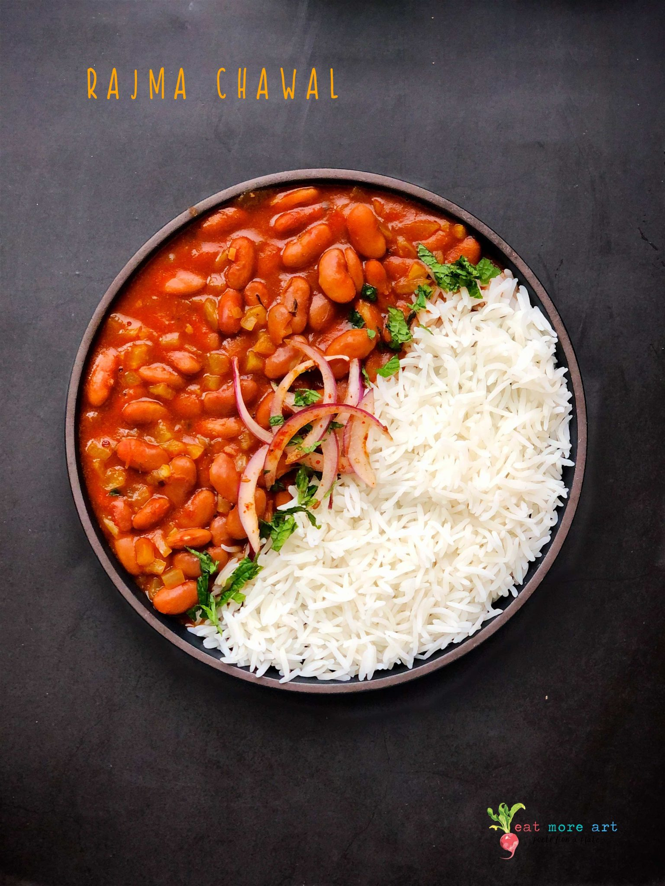

Rajma Chawal

Description
Rajma chawal is a popular dish in Indian cuisine that consists of kidney beans cooked in a tomato and onion-based gravy, served with steamed rice. It is a staple in many households and is enjoyed for its hearty and comforting flavors. The dish is often seasoned with a blend of aromatic spices such as cumin, coriander, and garam masala, which gives it a rich and flavorful taste. Rajma chawal is also a nutritious meal, as kidney beans are a good source of protein and fiber, while rice provides carbohydrates. It is a filling and satisfying dish that can be enjoyed for lunch or dinner, and is often paired with a side of pickles, yogurt, or papadums.
Ingredients
- 1 cup rajma (kidney beans)
- 1 onion, finely chopped
- 2 tomatoes, finely chopped
- 1 tsp cumin seeds
- 1 tsp coriander powder
- 1 tsp garam masala powder
- 1 tsp turmeric powder
- 1 tsp red chili powder (optional)
- 2-3 cloves of garlic, finely chopped
- 1 inch ginger, finely chopped
- 2 tbsp oil
- Salt to taste
- 3 cups water
- 1 cup basmati rice
- 2 cups water (for cooking rice)
- 1 tbsp ghee (optional)
- Fresh coriander leaves, finely chopped (for garnishing)
Steps
- Soak 1 cup of rajma (kidney beans) in water overnight or for at least 8 hours.
- Drain the water from the soaked rajma and rinse them well.
- In a pressure cooker, heat 2 tbsp of oil and add 1 tsp cumin seeds.
- When the cumin seeds start to splutter, add 1 finely chopped onion and sauté until golden brown.
- Add 2-3 cloves of chopped garlic and 1 inch of chopped ginger. Sauté for a minute.
- Add 2 finely chopped tomatoes and sauté until they turn mushy.
- Add 1 tsp coriander powder, 1 tsp garam masala powder, 1 tsp turmeric powder, and 1 tsp red chili powder (optional). Mix well.
- Add the soaked and rinsed rajma to the cooker along with 3 cups of water and salt to taste.
- Pressure cook the rajma for about 10-12 whistles or until they are soft and fully cooked.
- In a separate pot, wash 1 cup of basmati rice and add 2 cups of water.
- Cook the rice until it is fully cooked and fluffy.
- Once the rajma is fully cooked, open the cooker and check if the gravy has a medium consistency. If it's too thin, simmer it for a few more minutes until it thickens.
- Turn off the heat and add 1 tbsp of ghee (optional) to the rajma and mix well.
- Serve the rajma hot with the steamed rice and garnish with freshly chopped coriander leaves.